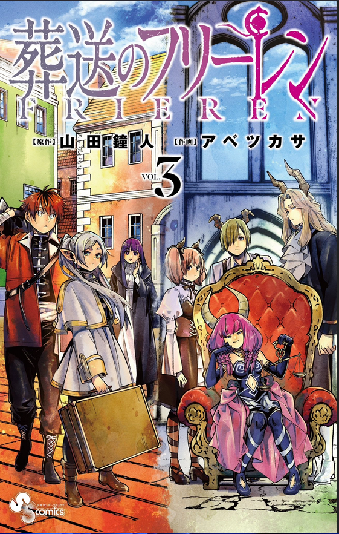

Volume pertama dibuka dengan sebuah anomali dalam genre fantasi: cerita dimulai di titik di mana petualangan besar biasanya berakhir. Kelompok Pahlawan yang terdiri dari Himmel, Heiter, Eisen, dan Frieren kembali ke ibu kota setelah sepuluh tahun menempuh perjalanan berbahaya untuk mengalahkan Raja Iblis. Perayaan besar menyambut mereka, namun bagi Frieren, seorang elf dengan masa hidup ribuan tahun, sepuluh tahun tersebut terasa seperti sekejap mata yang tidak memberikan dampak mendalam pada jiwanya.
Ketimpangan persepsi waktu antara Frieren dan rekan-rekannya yang manusia menjadi tema sentral sejak awal. Saat mereka menyaksikan hujan meteor "Era Meteor" yang terjadi setiap 50 tahun sekali, Frieren dengan santai berjanji untuk menunjukkan pemandangan yang lebih baik kepada mereka di waktu berikutnya. Bagi Frieren, 50 tahun hanyalah jeda singkat, namun ia tidak menyadari bahwa bagi manusia, itu adalah sisa dari masa muda dan kesehatan mereka yang berharga.
Perubahan besar terjadi ketika 50 tahun berlalu dan Frieren kembali untuk menepati janjinya. Ia menemukan Himmel telah menjadi pria tua yang renta, namun tetap memiliki hati yang hangat. Tak lama setelah reuni terakhir mereka untuk melihat hujan meteor tersebut, Himmel meninggal dunia karena usia tua. Di pemakaman Himmel, Frieren mengalami guncangan emosional yang tak terduga; ia menangis tersedu-sedu bukan karena kehilangan, melainkan karena penyesalan karena ia tidak pernah mencoba mengenal Himmel lebih dalam selama mereka bersama.
Kematian Himmel menjadi katalisator bagi transformasi karakter Frieren. Ia mulai menyadari bahwa "waktu manusia" sangatlah terbatas dan berharga. Penyesalan ini mendorongnya untuk memulai perjalanan baru seorang diri, dengan tujuan untuk mempelajari sihir-sihir yang tampak "tidak berguna" dan, yang lebih penting, untuk lebih memahami sifat manusia yang selama ini ia abaikan. Perjalanan ini bukan lagi tentang menaklukkan musuh, melainkan tentang pencarian makna di balik kenangan.
Kematian Himmel menjadi katalisator bagi transformasi karakter Frieren. Ia mulai menyadari bahwa "waktu manusia" sangatlah terbatas dan berharga. Penyesalan ini mendorongnya untuk memulai perjalanan baru seorang diri, dengan tujuan untuk mempelajari sihir-sihir yang tampak "tidak berguna" dan, yang lebih penting, untuk lebih memahami sifat manusia yang selama ini ia abaikan. Perjalanan ini bukan lagi tentang menaklukkan musuh, melainkan tentang pencarian makna di balik kenangan.
Beberapa tahun kemudian, Frieren mengunjungi Heiter, sang pendeta yang kini juga sudah menua. Heiter menggunakan sisa hidupnya untuk merawat seorang yatim piatu bernama Fern. Melalui sebuah rencana cerdik, Heiter meyakinkan Frieren untuk mendidik Fern dalam ilmu sihir. Meskipun awalnya enggan karena menganggap hubungan dengan manusia hanya akan membawa kesedihan di masa depan, Frieren akhirnya menerima Fern sebagai muridnya, menandai dimulainya babak baru dalam hidupnya.
Interaksi antara Frieren dan Fern memberikan dinamika yang segar dalam narasi. Fern tumbuh menjadi penyihir muda yang sangat berbakat dan disiplin, sering kali bertindak sebagai sosok yang lebih dewasa dibandingkan Frieren yang santai dan sulit bangun pagi. Melalui Fern, pembaca melihat bagaimana Frieren mulai mempraktikkan cara-cara untuk menghargai keseharian, sembari perlahan-lahan mewariskan pengetahuan dan filosofi sihir yang ia miliki kepada generasi penerus.
antara Frieren dan Fern memberikan dinamika yang segar dalam narasi. Fern tumbuh menjadi penyihir muda yang sangat berbakat dan disiplin, sering kali bertindak sebagai sosok yang lebih dewasa dibandingkan Frieren yang santai dan sulit bangun pagi. Melalui Fern, pembaca melihat bagaimana Frieren mulai mempraktikkan cara-cara untuk menghargai keseharian, sembari perlahan-lahan mewariskan pengetahuan dan filosofi sihir yang ia miliki kepada generasi penerus.
Volume 1 ditutup dengan penetapan tujuan akhir yang jelas: Aureole, tanah tempat jiwa-jiwa bersemayam yang terletak di ujung utara benua, tepat di bekas kastil Raja Iblis. Frieren memutuskan untuk pergi ke sana dengan harapan bisa berbicara sekali lagi dengan roh Himmel untuk menyampaikan perasaan yang dulu gagal ia ungkapkan. Dengan suasana yang melankolis namun penuh harapan, volume ini menetapkan dasar bagi sebuah kisah tentang penebusan, waktu, dan keindahan dari hubungan yang fana.